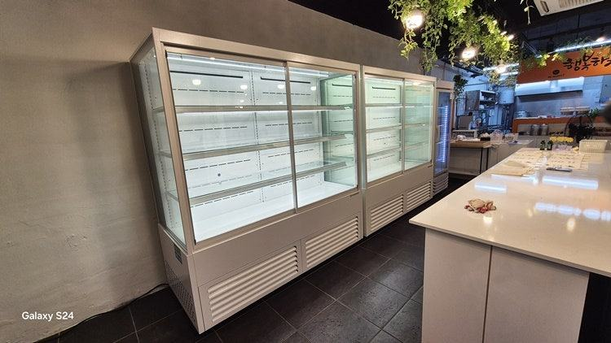
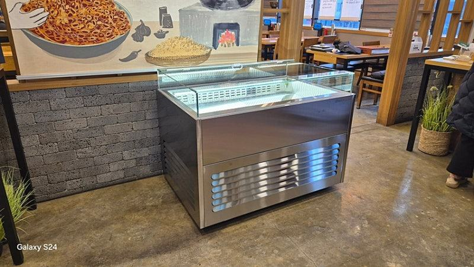
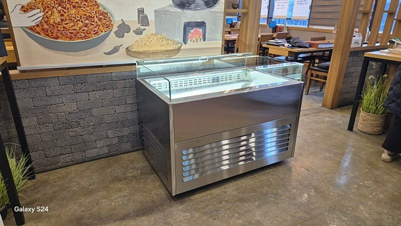

반찬(진열)쇼케이스
반찬쇼케이스 사이즈, 반찬 가짓수와 용기로 길이 정하는 법

반찬쇼케이스 사이즈는 하루에 진열할 반찬 가짓수와 쓰는 용기 크기로 필요한 진열 면적을 먼저 계산하고, 그 면적을 단 수로 나눠 가로 길이를 정하는 순서가 정확합니다. 그다음 손님이 서는 통로 폭과 직원이 채우는 뒤쪽 공간을 빼고 깊이를 정하시면 매장에 맞는 크기가 나옵니다.
안녕하세요. 반찬가게와 반찬 코너의 진열 쇼케이스를 크기부터 맞춰 만드는 한성쇼케이스입니다.
반찬가게 인테리어 도면을 받으면 사장님들이 가장 먼저 물으시는 게 "이 벽에 몇 자짜리가 들어가요?"입니다.
벽 길이를 재서 꽉 채우면 될 것 같지만, 막상 운영해 보면 칸이 남아 휑하거나, 반대로 반찬이 다 안 들어가 일부를 냉장고에 넣어 두게 되는 경우가 많습니다.
반찬은 나물, 무침, 조림, 젓갈, 국물 반찬까지 용기 크기와 높이가 제각각이라 같은 길이라도 들어가는 가짓수가 크게 달라집니다.
손님이 허리를 숙여 고르는지 서서 고르는지에 따라 적당한 높이도 다릅니다.
오늘은 반찬쇼케이스 사이즈를 가로, 깊이, 높이 순서로 정하는 방법과 사이즈를 잘못 정했을 때 생기는 문제를 정리해 드리겠습니다.
1. 가로 길이는 반찬 가짓수에서 시작
먼저 평소 진열할 반찬 가짓수와 용기 크기를 적어 보세요. 소분 팩 위주인지, 큰 밧드에 담아 덜어 파는지에 따라 필요한 면적이 완전히 다릅니다.
밧드 판매라면 밧드 규격이 몇 개 들어가는지로 길이를 역산하시는 게 가장 정확합니다.
가짓수가 계절마다 바뀐다면 가장 많을 때를 기준으로 잡되, 적은 날에도 빈 칸이 티 나지 않도록 칸막이 위치를 바꿀 수 있게 해 두면 좋습니다.
맞춤 제작은 900에서 1800 사이처럼 매장에 맞춰 길이를 고를 수 있어 벽 길이와 진열량을 함께 맞추기 쉽습니다.
- 진열 반찬 가짓수와 용기·밧드 규격을 적어 두세요.
- 계절별로 가장 많은 가짓수를 기준으로 잡으세요.
2. 깊이는 통로와 뒤쪽 작업 공간에서
깊이가 깊을수록 진열 면적은 늘지만, 손님 쪽 통로와 직원이 뒤에서 채우는 공간이 줄어듭니다. 반찬가게는 손님이 쇼케이스 앞에 서서 오래 고르는 편이라 통로가 좁으면 뒤에 선 손님이 지나가지 못합니다.
뒷문으로 채우는 대면형이라면 쇼케이스 뒤에 문이 열리고 사람이 설 공간이 남는지 확인해 주세요. 앞에서 손님이 직접 꺼내는 셀프형이라면 앞쪽 통로 폭이 더 중요합니다.


3. 높이와 단 수는 손님 눈높이로
단 수를 늘리면 같은 길이에 더 많이 진열할 수 있지만, 맨 아래 칸은 손님이 허리를 숙여야 보이고 맨 위 칸은 키 작은 손님이 꺼내기 어렵습니다.
자주 나가는 반찬이 어느 높이에 놓일지를 먼저 정하고 단 수를 맞춰 보세요.
국물 반찬이나 젓갈처럼 흘리기 쉬운 반찬은 아래 칸, 가벼운 소분 팩은 위 칸으로 나누면 관리가 쉽습니다.
단차와 선반 간격을 용기 높이에 맞추면 칸 사이 빈 공간이 줄어 냉기도 고르게 돕니다.
- 주력 반찬이 놓일 높이를 먼저 정하세요.
- 용기 높이에 맞춰 선반 간격을 정하세요.
4. 사이즈가 안 맞으면 생기는 일
기성품이나 중고 제품은 이전 매장에 맞춘 크기라, 내 매장에 넣으면 벽과 쇼케이스 사이에 애매한 틈이 생기거나 통로를 막는 경우가 많습니다.
틈새에는 먼지와 반찬 국물이 쌓여 위생 관리가 어려워집니다.
너무 작게 사면 반찬 일부를 주방 냉장고에 넣어 두고 수시로 꺼내 채워야 하고, 너무 크게 사면 빈 칸을 채우려고 필요 이상으로 반찬을 만들게 됩니다.
이런 문제는 설치해서 써 보기 전까지는 체감하기 어려우니, 도면 단계에서 진열량과 통로를 함께 따져 보세요.
체크리스트
- 진열 반찬 가짓수와 용기 규격
- 벽 길이와 쇼케이스 가로 길이
- 손님 통로와 뒤쪽 작업 공간
- 대면형인지 셀프형인지
- 단 수와 주력 반찬 높이
- 반입 경로와 출입문 폭
좁은 매장에 맞춰 규격을 정한 미니 반찬냉장고 제작
1인 창업으로 작은 반찬 매장을 여시는 사장님들은 공간을 한 뼘도 버리기 아깝다고 말씀하십니다. 시중의 기성 냉장고는 모양과 사이즈가 균일하게 정해져 있어, 이렇게 좁은 공간을 최대한 써야 하는 매장에는 잘 맞지 않는 경우가 많습니다.
그래서 미니 반찬냉장고도 사이즈와 규격을 매장에 맞춰 제작하고, 원하시는 디자인 방향을 반영해 만들어 드립니다.
직접 제조하는 공장이라 크기를 세밀하게 조정할 수 있고, 설치 후 고장이나 불편한 점이 생기면 문의를 받아 꼼꼼히 확인한 뒤 A/S를 진행해 드리고 있습니다.




자주 묻는 질문
반찬쇼케이스는 몇 단이 적당한가요?
정해진 답은 없고 반찬 용기 높이와 손님 눈높이로 정합니다. 밧드 판매라면 1단 평대형, 소분 팩 위주라면 2~3단 구성을 많이 고려하십니다.
벽 길이에 딱 맞춰 만들면 문제가 없나요?
뒷면과 옆면에 열이 빠질 공간이 조금은 있어야 합니다. 실측 치수를 주시면 그 여유를 빼고 가장 길게 들어갈 수 있는 크기로 제안해 드립니다.
나중에 반찬 가짓수가 늘면 어떻게 하나요?
처음부터 칸막이를 옮길 수 있게 만들거나, 옆에 한 대를 더 붙일 자리를 남겨 두시면 좋습니다. 같은 외관으로 추가 제작하면 매장 분위기도 그대로 이어집니다.
매장 조건에 맞춰 만드는 한성쇼케이스
원하시는 제품 사진과 설치할 공간 사진만 보내 주셔도 매장에 맞는 구성을 추천해 드립니다.
- 전국 240여 개 A/S 전담 센터 운영
- 본사 대량 자재 매입으로 품질 대비 합리적인 가격
- 유럽제·삼성 냉각 콤프레셔 적용
- 국내 최초 쇼케이스 전문 디자이너 상주
매장 폭과 원하는 진열 구성을 알려 주세요. 실측과 견적을 안내해 드립니다.
031-986-2458